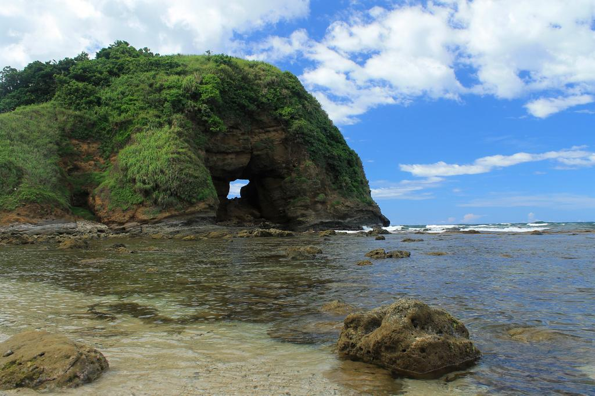

Here are several questions about the Saud Beach
|
Saud Beach

|
I. Is Saud Beach open for public?
-Yes Saud Beach is a public beach.No entrance fee but if
you'll enter a particular resort along the beach and use or rent
some of its facilities (like cottage, shower rooms, etc.)
II. How do I go to Saud Beach Pagudpud from Manila?
-The most common way to get to Saud Beach is by taking
a bus from Manila to Laoag City,
III. What is Saud Beach known for?
-It is known for its stunning white sand and crystal blue waters.
|

|
Here are several questions about the Cape Bojeador Lighthouse
|
Cape Bojeador Lighthouse

|
I. Why is Cape Bojeador Lighthouse famous?
-The Cape Bojeador Lighthouse is the
most accessible of all lighthouses located in the
north western island of Luzon
II.How tall is Cape Bojeador?
-Standing 160 meters above sea level, the
Lighthouse of Cape Bojeador is the highest elevated
lighthouse in the Philippines.
III. Is Cape Bojeador Lighthouse is open for public?
-Absolutely not you have to pay for the entrance ticket
|

|
Here are several questions about the Patapat Viaduct
|
Patapat Viaduct

|
I. Why is Patapat Bridge famous?
-Because the bridge crosses Pasaleng Bay, motorists
can enjoy a beautiful view of the bay and the scenic
mountain view on the other side.
II. What is the Patapat Viaduct known for?
-A visit to the Ilocos Region would be incomplete
without a stop at the Patapat Viaduct, the 4th longest
bridge in the Philippines which elevated 30meters over
sea level..
|
|
|
Here are several questions about the Bantay Abot Cave
|
Bantay Abot Cave

|
I. Does Bantay Abot Cave is open for public?
-Yes but you need to go down the road and use a
wooden ladder which is not very stable and up the cave.
II. What is the meaning of Bantay Abot?
- Bantay Abot means "mountain with a hole". This cave-like
rock archway that frames a rocky shore is believed to have been
a hill that eroded over time after an earthquake struck.
|
|
|
Here are several questions about the Blue Lagoon
|
Blue Lagoon

|
I. Does Blue Lagoon is open for public?
-Yes, this area is open 24 hours a day and requires no payment at all.
II. What is the Blue Lagoon, Ilocos, known for?
- Blue Lagoon is one of the many isolated beaches of Pagudpud. It is
located in Maira-ira point, the northernmost tip of mainland Luzon.
Phone#09081624987
|
|
|
Here are several questions about the Kabigan Falls
|
Kabigan Falls

|
I. Does Kabigan Falls is open for public?
-Yes, this area is open 24 hours a day and requires no payment at all.
II. How tall Kabigan Falls?
- Kabigan Falls is a natural waterfall and tourist attraction in Brgy.
Balaoi, Pagudpud, Ilocos Norte, Philippines. Featuring a cascade of approximately
87 feet (27 m) high that drops into a concave basin, Kabigan Falls is hidden in a
dense forest and is accessible via a trek along a trail near Bantay Abot Cave.
|
|
|